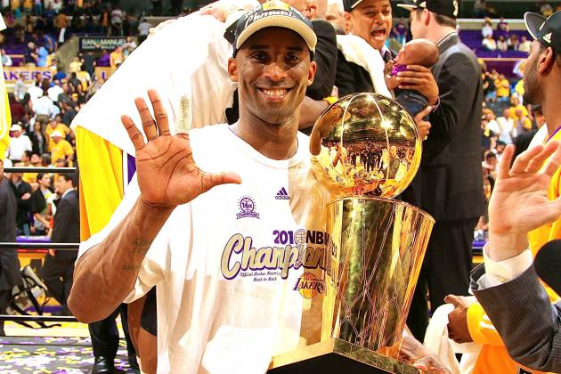
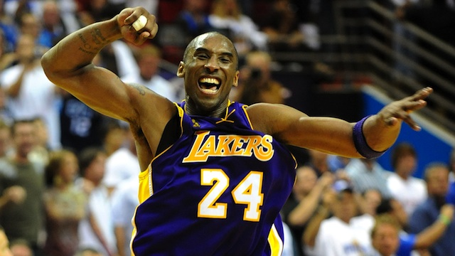
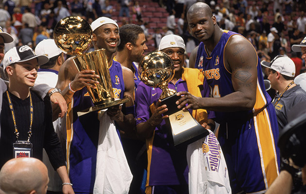
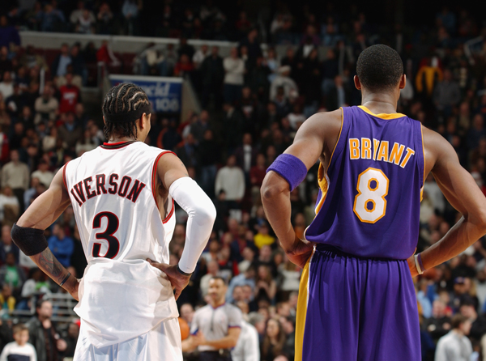
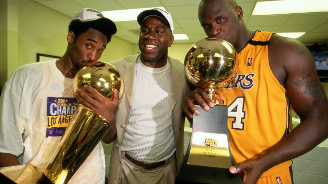

The Azorean Islands are one of the two autonomous regions of Portugal, this area is home to a cluster of 9 Major Volcanic Islands.
Kobe Bryant is regarded as one of the most famous retired basketball players in the history of the NBA. After playing his entire 20 year career with the LA Lakers, and helping them acheive 5 playoff wins, Kobe has retired from Basketball leaving his Legacy behind him.
NBA Titles
2010

The lakers had to play against the Boston Celtics in the NBA finals to win this title. They won the playoffs with a score of 4-3. Kobe, who was 31 at the time posted an average of 28 PPG, 10 Points higher than the next best Player in both teams. His amazing performance granted him with the NBA Finals MVP award for the second year in a row.
2009

The Lakers beat the Orlando Magic, 4-1 in the Best-of-Seven finals to win this title. Kobe averaged 32 PPG in the playoffs, almost 14 Points ahead of the next best performer. Kobe scored the highest points in 4 of the 5 match-ups and secured the NBA Finals MVP award.
2002

The Los Angeles Lakers won the 2002 NBA finals against the New Jersey Nets with an amazing 4-0 sweep in the playoffs. Kobe averaged the second best score for the LA Lakers behind Finals MVP Shaquille O'Neal (Far right on the photo above) with a still impressive 26.8 PPG. He acheived this while being the youngest player on the Lakers who played all four games.
2001

In the 2000-2001 Season, Lakers won the NBA Finals against the Philidelphia 76ers by 4-1. The MVP award was granted to Shaquille O'Neal, however, Kobe's performance in the finals was still noteworthy. Kobe averaged 24.6 PPG, over double his next best teamates perfromance. Largely due to his huge performance in Game 2 where he led the team to victory with a 31 point score.
2000

Kobe won his first NBA title with the LA Lakers in 2000 after beating the Indiana Pacers 4-2 in playoffs. During the finals in Game 2 he even sprained his ankle but still managed to help secure the win despite playing only 5 of the 6 games and scoring 15.6 PPG.